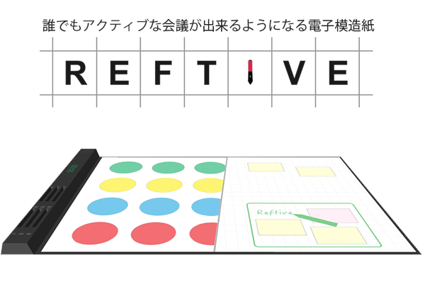

- 


数多くの分析と話し合いとプロトタイピングを行い、会議に慣れていなくてもアクティブな会議が実現できるよう支援する電子ペーパー「Reftive」の提案に至った。情報デザインⅡではグループワークにおいて、メンバーの意見の尊重・客観的な視点の重要性と一つの提案を一から作り発表するまでのプロセスを学ぶことが出来た。
この講義では、人とモノとを繋ぐ「インターフェース」のデザインやユーザーの心理を学ぶことで人とモノとのよりよい関係性をデザインする技術を身につけた。特にWeb上での視覚的なデザインに力を入れた。
「プロジェクト」と呼ばれるこの講義では一年を通して学科の垣根を越えたメンバーで一つのテーマについての研究を行う。 私はFabLab Hakodateのプロジェクトリーダーを務めており、この講義を通して組織をまとめる統括力・スケジュール管理能力・イベントの運営のノウハウなどたくさんのスキルを身につけた。